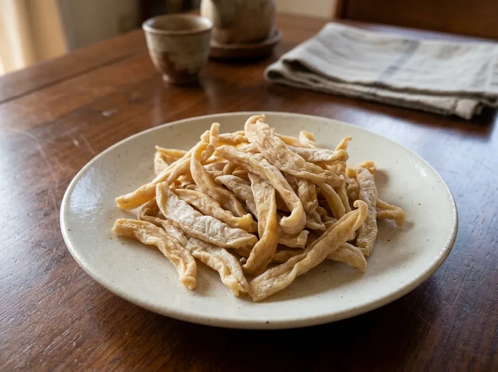

條仔脯
整條蘿蔔手選、鹽醃、反覆翻曬，適合煮湯與泡茶。
菜脯埕產品
同樣是家裡種的秋冬蘿蔔，整條入缸、先切條或刨成絲，做出來的香氣、口感和吃法各有不同。

整條蘿蔔手選、鹽醃、反覆翻曬，適合煮湯與泡茶。

阿婆順著蘿蔔紋理一條條切，曬出脆口鮮香，做內餡或炒菜都合適。

秋冬白蘿蔔刨絲，不加鹽，靠風與日光留住鮮甜。

整條菜脯慢慢陳放，留下深厚醇香，適合補湯。
煮雞湯或想泡一壺菜脯茶，可以從條仔脯、老菜脯選起。想吃得到爽脆口感，切脯適合炒菜、佐醬或當餡。想做草仔粿、紅豆餅，或喜歡白蘿蔔本身的鮮甜，試試沒有加鹽製作的菜脯米。